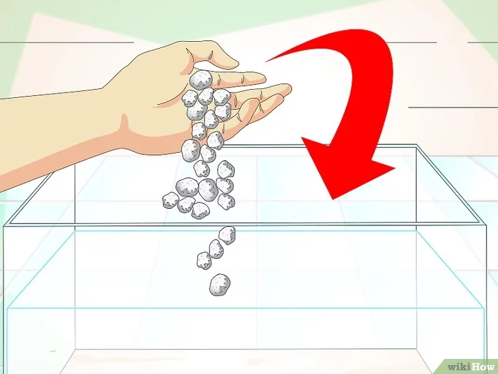

Cómo hacer que el agua de un acuario se mantenga transparente
Cuando el agua de un acuario es transparente, significa que dentro de él hay un ambiente saludable.
Los peces necesitan agua limpia y saludable para desarrollarse y vivir. Los restos de comida, los desechos
de los peces y los residuos vegetales incrementan el nivel de pH del agua del tanque y hacen que no sea segura.
En este artículo, aprenderás varias formas de mantener limpia el agua de tu acuario.
Instalar el acuario
Deja el agua turbia. La mayoría de las veces, el agua turbia desaparece por sí sola a medida que el agua del ambiente
se ajuste. Con frecuencia, el agua turbia es el resultado de la mezcla de organismos microscópicos, como las bacterias,
los protozoos y los micrometazoos. Estos organismos provienen de los peces, la comida y los desperdicios. Generalmente,
el agua del tanque se nivelará y aclarará dentro de una semana.
Sé paciente. Antes de añadir químicos o tratar de hacer algo drástico para solucionar el problema del agua turbia,
recuerda que el acuario está lleno de organismos vivos. Antes de hacer algo con el agua, determina la causa por la cual
se haya vuelto turbia. Añadir químicos y limpiadores innecesarios al agua del tanque puede alterar el ambiente dentro
de él y dañar a los peces.

Añade bacterias beneficiosas. Agregar bacterias beneficiosas al acuario ayuda al proceso natural del tanque.
Puedes colocar estas bacterias en el tanque de dos formas. Puedes comprar bacterias previamente empacadas en una
tienda o conseguir grava que ya las contenga. También puedes tomar grava, rocas, madera de deriva o una almohadilla
filtrante de un tanque establecido y trasladarlos a tu tanque. Estos materiales ya contendrán bacterias.
Los cultivos de bacterias permitirán eliminar el amoníaco y el nitrito, los cuales son toxinas. Estos cultivos hacen
que el nitrito sea menos dañino, el cual posteriormente se retira durante los cambios de agua. Las mejores especies
bacterianas para hacerlo son las nitrosomas y las nitrobacterias.
Coloca plantas vivas adecuadas dentro del tanque. Otra forma de mantener el tanque limpio es agregando plantas vivas.
Estas plantas están cubiertas de bacterias benéficas, las cuales también filtran el agua. Puedes compararlas en tu
tienda de mascotas local.
Determina si tienes el filtro adecuado. Existen diferentes filtros que cumplen distintas funciones dentro del acuario.
Es probable que el agua esté turbia si tienes el filtro equivocado. El filtro que escojas dependerá de la cantidad de
peces que tengas, el tipo de acuario y el uso de plantas vivas o artificiales.
Puedes escoger entre tres tipos diferentes de filtros. Los filtros mecánicos quitan las partículas empujando el agua a
través de un material que las atrapa. Los filtros biológicos usan las bacterias para cambiar las toxinas en sustancias
menos tóxicas. Los filtros químicos usan químicos para quitar toxinas o químicos del agua.
Llena el tanque de manera consciente. No coloques demasiados peces dentro del tanque. De lo contrario, podrías ocasionarles
problemas de salud y dificultar la limpieza del tanque. Procura mantener la cantidad de peces aproximadamente a 3 cm (1 pulgada)
de peces por 4 litros (1 galón) de agua.
Darle mantenimiento al acuario
Cambia el agua. Una buena regla general es cambiar el 20 % del agua del tanque cada semana. Si usas agua del grifo, deja que se
asiente durante dos días. De ese modo, alcanzará la temperatura ambiente y permitirá que el cloro se disperse, lo cual evitará
que el agua altere a los peces cuando la viertas en el tanque.
También puedes comprar un dispositivo que se sujete al grifo y aspire la grava mientras retires y reemplaces el agua del tanque.
Si usas este método, no será necesario que esperes unos cuantos días. Tan solo asegúrate de que la temperatura sea parecida a la
del tanque y añade un eliminador de cloro.
Mantén el filtro limpio. Debes mantener el filtro listo y en funcionamiento. Este aparato permite que el tanque se mantenga saludable
y próspero. Por lo tanto, si no lo cambias o no le das mantenimiento, podrías ocasionar que el agua se vuelva turbia o incluso que los
peces se mueran. Lee las instrucciones del filtro para saber cómo cuidar de él.
Debes examinar los filtros mensualmente y cambiarlos si es necesario. Verifícalos semanalmente para cerciorarte de que no se
obstruyan ni que se acumulen residuos dentro de ellos. Límpialos o reemplázalos según sea necesario.
Lee el manual de instrucciones que haya venido con la bomba para asegurarte de que esté instalada apropiadamente y funcione de forma
adecuada. La bomba es importante porque ventila el acuario con oxígeno del aire. Si no funciona apropiadamente, los peces sufrirán,
especialmente si el agua está turbia debido a sus desechos.